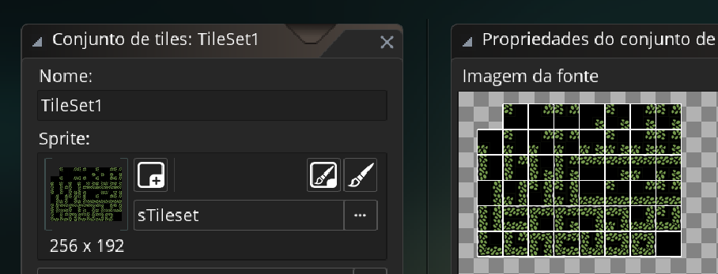

site do jogo teste (perdi meu jogo original e estou muito triste)
Este jogo foi feito usando arte de terceiros (tutorial gringo que eu usei), o cara que eu peguei o tutorial pareçe maneiro veja o video aqui caso saiba ingles
o jogo e so uma "fase" com algumas moedas feito com ajuda de um tutorial, e somente uma base para um jogo (ainda estou muito triste de per perdido meu jogo )
aqui o jogo game legal
opa vou explicar um pouquinho o processo de fazer esse jogo, de inicio pego os assets disponibilizados pelo criador e jogo eles para o gamemaker, logo após ajusto as hitboxes dos sprites, uma maneira muito util que o dono do tutorial mostrou no video e o uso de conjunto de tiles uma maneira mais facil de construir seus mapas,
basicamete apos assimilar cada sprite a seu devido local você consegute utilizar isso na criação de mapas

assim criamos a gravidade, movimentação do personagem, velocidade horizontal e horizontal. Assim criando um objeto assumindo sprites ao objeto, a gravidade se baseia em sempre estar puxando o personagem sempre para baixo, para pular damos um valor negativo a gravidade assim fazendo ele pular, para andar para a direita e dado um valor de 1, para a esquerda -1 e ficar parado é 0
apos construir o mapa criamos a colisão do chão, progamos para o personagem colidir com o chão e colocamos onde o personagem ira encostar (vermelho = colisão)
Depois criamos outro objeto para a moedas, colocamos sprite e para que quando o personagem encostes na moeda toque um som
criamos tambem um objeto para a camera, ativamos o visor para sala, assimilamos o visor com a camera delimitamos ela e colacos para ela colocar o personagem botar o personagem no centro e seguir ela, no tutorial tambem mostra como fazer a camera não mostrar fora do cenario e o fundo ser da sala ter um efeito de paralax